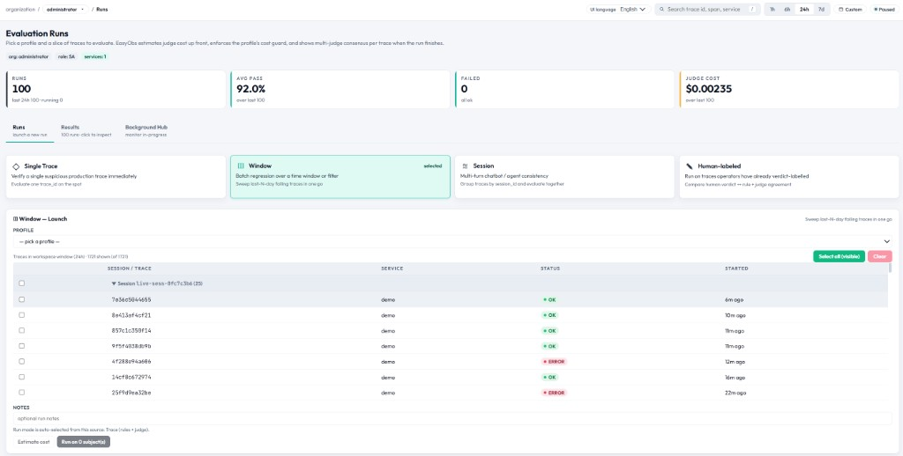
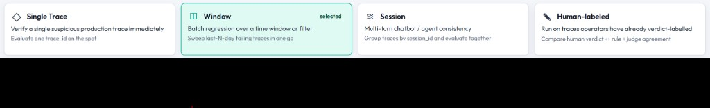
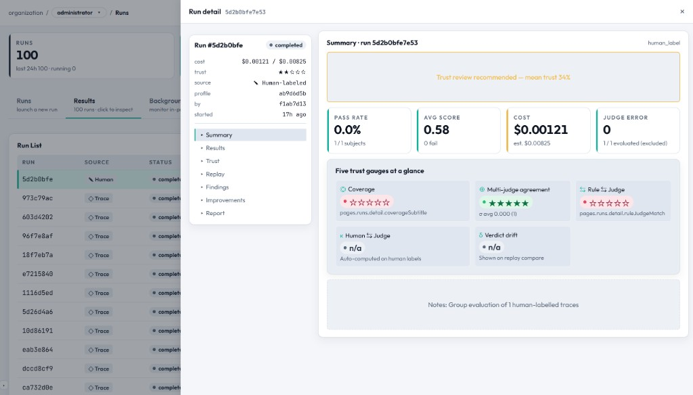

평가 실행 — 전체 기능 매뉴얼
Runs 페이지는 자동 품질 평가를 시작하고 모니터링하며, 결과를 검토하는 핵심 작업 공간입니다. 3-Way 탭 구조와 4가지 소스 전략, 비용 추정, 결과 드릴다운을 한 화면에서 제공합니다.

페이지 구조 — 3-Way 워크벤치
Runs 페이지 상단에는 3개의 탭으로 구성된 세그먼트 컨트롤이 있습니다.
| 탭 | URL 파라미터 | 역할 |
|---|---|---|
| Launch | ?tab=launch (기본) | 새 평가 실행을 구성하고 시작 |
| Results | ?tab=results | 완료된 실행을 탐색하고 verdict/점수를 확인 |
| Background Hub | ?tab=bg | 진행 중인 실행을 라이브 상태로 모니터링 |
탭 1: Launch
Launch 탭은 평가 실행을 구성하고 시작하는 단계별 위저드입니다.
Step 1 — 평가 프로파일 선택
드롭다운에는 활성화된 모든 평가 프로파일이 표시됩니다(GET /api/eval/profiles로 조회). 각 프로파일은 다음을 정의합니다.
- 사용할 평가자 종류 (Rule / LLM Judge / Human)
- 합의 정책 (single, majority, unanimous, weighted)
- Budget Guard (실행당 최대 비용)
- 대상 project/service 범위
Step 2 — 소스 선택 (4개 소스 카드)
네 개의 소스 카드가 어떤 트레이스를 평가할지 결정합니다.
| # | Source | ID | Run Mode | 설명 |
|---|---|---|---|---|
| 1 | Time Window | window |
trace |
현재 시간 범위(1h/6h/24h/7d) 내 모든 트레이스. 목록에서 개별 선택하거나 "Select All"을 사용할 수 있습니다. |
| 2 | Single Trace | single_trace |
trace |
특정 trace ID를 직접 입력하거나 미리 채운 상태로 사용. Trace Inspector의 "Evaluate" 버튼이 이 진입점입니다. |
| 3 | Session | session |
trace |
session ID로 트레이스를 필터링 — 하나의 대화 스레드 전체를 평가합니다. |
| 4 | Human Label Cohort | human_label |
golden_judge |
이전에 휴먼 라벨링된 주석을 그라운드 트루스로 사용. LLM 저지의 verdict를 휴먼 verdict와 비교합니다. |

Source: Time Window (상세)
- 프로파일의 project 범위에 해당하는 트레이스를 최대 2,000건까지 가져옵니다.
- 탐색을 쉽게 하기 위해 session 단위로 그룹핑합니다.
- 각 트레이스에 체크박스가 있어 개별 선택 또는 "Select All in View"가 가능합니다.
- session 그룹은 헤더 클릭으로 펼치거나 접을 수 있습니다.
- 트레이스 작업명, 서비스, 지속 시간, 상태 배지, 비용을 함께 표시합니다.
Source: Single Trace (상세)
- 32자리 trace ID를 입력하는 텍스트 필드
- Trace Inspector CTA에서 넘어올 때
?prefill-trace=<id>URL 파라미터로 자동 채워집니다. - 실행 전에 트레이스 존재 여부를 검증합니다.
Source: Session (상세)
- session ID를 부분 일치로 검색하는 텍스트 필터
- 매칭되는 트레이스를 모두 보여주며 평가할 항목을 선택할 수 있습니다.
- 멀티턴 대화의 품질을 평가할 때 유용합니다.
Source: Human Label Cohort (상세)
- 최근 휴먼 라벨 주석 최대 200건을 표시합니다.
- verdict로 필터링: All / Pass / Warn / Fail
- 여러 주석을 다중 선택할 수 있습니다.
- Run mode가
golden_judge로 전환되어 LLM 저지 출력과 휴먼 라벨을 비교합니다. - 등록된 저지 모델이 없으면
golden_gt모드로 폴백합니다.
Step 3 — 비용 추정
실행 전에 "Estimate Cost"를 클릭하면 다음 정보를 미리 볼 수 있습니다.
| 지표 | 설명 |
|---|---|
| Estimated Calls | 필요한 LLM 저지 API 호출 수 |
| Estimated Cost | 저지 모델 가격 기반 USD 추정 비용 |
| Budget Remaining | 프로파일의 Budget Guard 잔여 한도 |
| Trace Count | 선택된 평가 대상 수 |
Step 4 — 메모 & 실행
- Notes (선택) — 컨텍스트를 자유롭게 적는 텍스트 필드 (예: "Testing new prompt v2")
- Launch Run — 평가를 시작합니다. UI는 새 실행이 선택된 Results 탭으로 전환됩니다.
탭 2: Results
완료된 평가 실행을 탐색하고 상세를 살펴봅니다.
실행 목록
| 컬럼 | 설명 |
|---|---|
| Status | 배지: pending / running / completed / failed / cancelled |
| Profile | 사용된 평가 프로파일 이름 |
| Source | 사용된 소스 전략 (window / single / session / human) |
| Subjects | 평가된 트레이스 수 |
| Pass Rate | 통과한 트레이스 비율 (녹색 막대) |
| Cost | 저지 API 호출에서 실제 발생한 비용 |
| Created | 상대 시각 |
실행 상세 — 전체 워크벤치
Results 탭에서 실행 행을 클릭하면 상세 워크벤치가 열립니다. ?tab=results&run=<id>로 직접 진입해도 동일한 화면을 볼 수 있습니다. 실행이 running 상태라면 약 4초마다 폴링하며 상태가 갱신됩니다.
레이아웃
2단 레이아웃: 스크롤해도 항상 보이는 고정된 좌측 사이드바와, 활성 탭 이름·실행 모드(예: trace, golden_judge)·골든 셋 ID 등이 제목에 표시되는 메인 패널로 구성됩니다.
고정 사이드바 — 실행 컨텍스트
- Run id — 실행 UUID의 짧은 prefix와 status 배지 (
succeeded/failed등) - cost — 실제 USD vs 추정 USD (
costActualUsd / costEstimateUsd) - trust — 5개의 신뢰도 게이지 평균을 1~5점 별점으로 요약
- source — 추정된 소스 라벨: Golden Set, Human-labeled, Single Trace, Window 중 하나
- profile — 평가 프로파일 ID (단축)
- by — 실행을 트리거한 주체 (또는
system) - started — 상대 시각
- 탭 버튼 — 7개의 메인 탭 전환 (아래 참조)
7개의 탭
| 탭 | 용도 |
|---|---|
| Summary | 핵심 KPI, 신뢰도 경고, 컴팩트한 5개 게이지, 선택 메모 |
| Results | 세션 그룹핑, 트레이스별 그리드, 내보내기, 펼침 행 |
| Trust | 5개 게이지 전체 보기, 델타 히스토그램, Rule-vs-Judge 매트릭스, 저지 에러 분해 |
| Replay | 부모/자식 실행 비교(parent_run_id가 연결된 경우) |
| Findings | 모든 평가자 finding을 evaluator id별로 그룹화 |
| Improvements | 신뢰 회복 액션을 위한 Quality → Improvements로의 이동 안내 |
| Report | 실행과 결과를 CSV / JSON으로 다운로드 |
탭: Summary
- Low-trust 배너 — 5개 게이지 평균이 약 60% 미만이면 신뢰도 검토가 필요하다는 경고가 표시됩니다.
- KPI 그리드 — Pass rate(완료/대상 수), 평균 점수(실패 수 포함), 실제 vs 추정 비용, 저지 에러 수 (verdict가
error인 행은 메인 통계에서 제외됨) - 5개 신뢰도 게이지(컴팩트) — Coverage(50개 대상 기준 정규화), 다중 저지 합의(저지 disagreement delta 기반), Rule-vs-Judge 정합성, Human-vs-Judge kappa(라벨 누적 전까지는 placeholder), Verdict drift delta(placeholder, Replay에서 확인 가능 시 표시)
- Notes — 실행 시 입력된 메모가 있으면 표시됩니다.
탭: Results
- Download CSV / JSON — 모든 결과 행을 내보냅니다 (비어 있으면 비활성화).
- 세션 그룹 테이블 — session id별로 한 행 (없으면
-). 컬럼: 트레이스 수, pass / fail / error 수, 평균 점수. 행을 클릭하면 해당 세션의 트레이스가 아래 그리드에 로드됩니다. - 트레이스 그리드 — session 선택 후: trace id(트레이싱 상세로 이동), verdict, 전체 점수, Rule 점수, Judge 점수, delta(저지 disagreement), 저지 비용, finding 수
- 펼침 행 — 트레이스 행(링크 외 영역)을 클릭하면 펼쳐집니다: finding 목록(evaluator, kind, score, verdict, reason)과 저지별 투표(
judgePerModel)가 있으면 JSON으로 표시
탭: Trust
- 5개 게이지 — Summary와 동일한 메트릭을 게이지별 별점과 함께 풀사이즈로 보여줍니다.
- Delta 분포 — 저지 disagreement 값의 히스토그램 (다중 저지 delta 샘플이 없으면 비어 있음)
- Rule vs Judge 매트릭스 — Rule± vs Judge±의 2×2 카운트. 대각선은 일치, 비대각선은 룰의 false positive/negative 단서
- 저지 호출 에러 — verdict가
error인 결과를errorType별로 분해해서 표시(신뢰도 통계에서는 제외됨)
탭: Replay
parent run이 존재하면, 동일 대상에 대한 두 실행 간의 verdict drift, pass rate, 평균 점수, delta를 슬로프 형태의 차트로 비교합니다. parent_run_id가 없으면 standalone 실행이거나 부모가 기록되지 않았다는 안내가 표시됩니다.
탭: Findings
모든 결과의 finding을 평탄화한 뒤 evaluatorId별로 그룹화하고, trace prefix, verdict, score, reason을 보여줍니다(그룹당 최대 12개, 초과분은 카운트만 표시).
탭: Improvements
간략한 안내와 함께 Quality → Improvements로의 링크를 제공합니다. 신뢰도 게이지가 임계값 이하로 떨어진 경우 회복 액션 목록을 그곳에서 확인할 수 있습니다.
탭: Report
내보내기 액션 중복 제공: Download CSV와 Download JSON (JSON은 run과 results 객체 전체 포함).

탭 3: Background Hub
진행 중이거나 최근에 완료된 실행을 라이브 폴링(10초 주기)으로 모니터링합니다.
- 실행 상태 진행: queued → running → completed/failed
- 실행 중인 작업의 진행률 막대(퍼센트 포함)
- 행을 클릭하면 해당 실행이 선택된 Results 탭으로 이동합니다.
- 취소된 실행은 취소선 스타일로 표시됩니다.
URL 파라미터
| 파라미터 | 값 | 효과 |
|---|---|---|
tab | launch | results | bg | 활성 탭 지정 |
run | run ID | Results 탭에서 특정 실행 미리 선택 |
src | window | single_trace | session | human_label | 소스 카드 미리 선택 |
prefill-trace | trace ID | Single Trace 입력 자동 채움 |
profile | profile ID | 평가 프로파일 미리 선택 |
권한
- Project Owner (PO)와 Super Admin (SA) — 모든 권한: 실행 시작, 조회, 취소
- Developer (DV) — 읽기 전용: 결과 조회는 가능하나 실행 시작/취소는 불가
- 쓰기 권한이 없는 사용자에게는 WriteHint 배너가 표시되고 Launch 버튼이 비활성화됩니다.
실행 라이프사이클 (운영자 관점)
백엔드 워커의 처리 순서가 아닌, "Launch부터 Report까지" 운영자가 콘솔에서 거치는 흐름입니다.
엔지니어를 위한 API/워커 흐름: 실행 시작 시 run row가 생성되고, 워커가 각 대상에 대해 평가를 수행하며 상태를 업데이트합니다. 실행 중인 동안 콘솔은 약 10초마다 폴링합니다.
POST /api/eval/runs → pending → worker: fetch traces, run evaluators, consensus → completed | failedRun Mode 설명
| Mode | 트리거 | 동작 |
|---|---|---|
trace | Window / Single Trace / Session 소스 | LLM 저지가 트레이스 품질을 독립적으로 평가 |
golden_judge | Human Label 소스 (저지 모델 등록 시) | LLM 저지를 실행한 뒤, 휴먼 라벨을 그라운드 트루스로 비교 |
golden_gt | Human Label 소스 (저지 모델 미등록 시) | LLM 저지 없이 휴먼 라벨을 최종 verdict로 사용 |